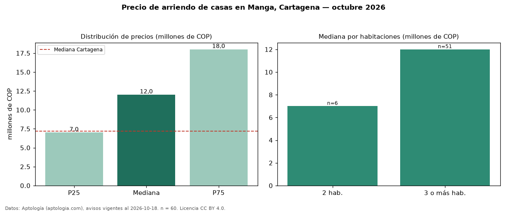

Precio de arriendo de casas en Manga, Cartagena — octubre 2026
Con 60 avisos vigentes, el canon mediano de casas en arriendo en Manga, Cartagena es COP 12 millones al mes. Frente a la mediana de Cartagena para casas (COP 7,19 millones), queda 67 % por encima. Por metro cuadrado, la mediana es COP 35.500/m² al mes (n = 58 avisos con área), 25 % por encima de Cartagena (COP 28.342/m²). Con el precio por m² de venta del mismo segmento (COP 5,43 millones/m²), la rentabilidad bruta implícita es 7,8 % anual (aproximación con medianas de ofertas distintas). La mitad central de los avisos va de COP 7,00 millones a COP 18 millones (razón 2,6), una dispersión alta. El área mediana anunciada es 263 m². El segmento con más oferta es el de 3 o más habitaciones (51 avisos, mediana COP 12 millones); pasar de 2 habitaciones a 3 o más habitaciones cambia la mediana +71 %. El estrato más frecuente es 5 (71 % de los avisos con estrato). Datos: Aptología (aptologia.com), CC BY 4.0 — https://www.aptologia.com/casas-en-arriendo/cartagena/manga. Archivos: PDF, CSV con las cifras y gráfica PNG.

| Avisos únicos | 60 |
|---|---|
| Percentil 25 | COP 7.000.000 |
| Mediana | COP 12.000.000 |
| Percentil 75 | COP 18.000.000 |
| Mediana por m² | COP 35.500 |
Fuente: avisos vigentes de portales inmobiliarios recopilados por Aptología, deduplicados (mínimo 30 avisos únicos por celda). Precios pedidos, no cerrados. Fecha: 2026-10-18.